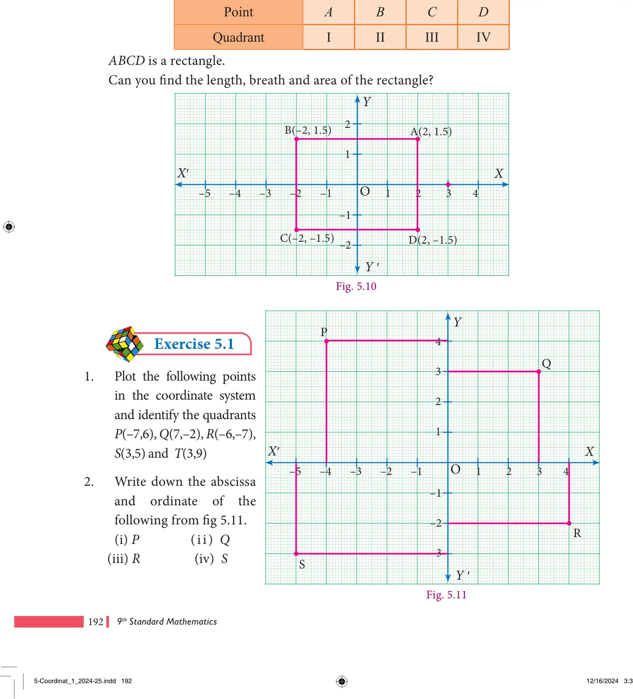
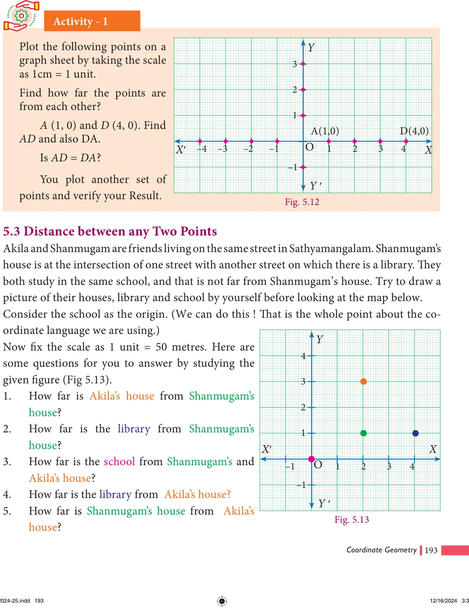

(iv) To plot \((4, -2)\), draw a vertical line at \(x = 4\) and draw a horizontal line at \(y = -2\). The intersection of these two lines is the position of \((4, -2)\) in the Cartesian plane. Thus, the Point D \((4, -2)\) is located in the IV quadrant of Cartesian plane.

Plot the following points \(A(2, 1.5)\), \(B(-2, 1.5)\), \(C(-2, -1.5)\), \(D(2, -1.5)\) in the Cartesian plane. Discuss the type of the diagram by joining all the points taken in order.
Solution

- Plot the following points in the coordinate system and identify the quadrants: \(P(-7, 6)\), \(Q(7, -2)\), \(R(-6, -7)\), \(S(3, 5)\) and \(T(3, 9)\).
- Write down the abscissa and ordinate of the following from fig 5.11: (i) P (ii) Q (iii) R (iv) S
- Plot the following points in the coordinate plane and join them. What is your conclusion about the resulting figure?
- \((-5, 3)\) \((-1, 3)\) \((0, 3)\) \((5, 3)\)
- \((0, -4)\) \((0, -2)\) \((0, 4)\) \((0, 5)\)
- Plot the following points in the coordinate plane. Join them in order. What type of geometrical shape is formed?
- \((0, 0)\) \((-4, 0)\) \((-4, -4)\) \((0, -4)\)
- \((-3, 3)\) \((2, 3)\) \((-6, -1)\) \((5, -1)\)
